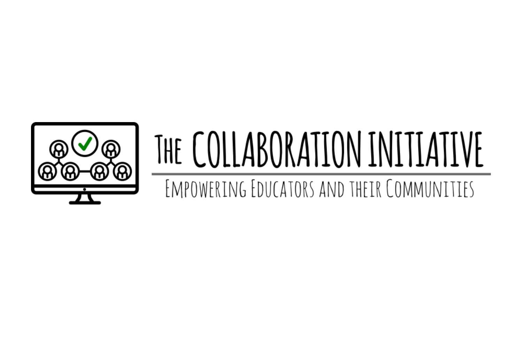

August 2020 – Current

WEB DEVELOPMENT & CRM INTERN
THE COLLABORATION INITITIATIVE
The Collaboration Initiative is a start-up in the UAE looking to create an online community for counsellors and people in education to collaborate and share important information on things going on in education.
• I have been working on creating a full-fledged website using Zoho Sites and have been using various Zoho platforms such as Zoho CRM, Desk, Social, etc. integrated with the website to help create a community that collaborates extensively.
• I am working on creating a help desk and discussion forum for users of the site to post questions and answer other users’ posts. I have also been looking at creating a search function for articles, posts and podcasts to be easily searchable on the website. I have been using HTML and CSS to create a website layout.